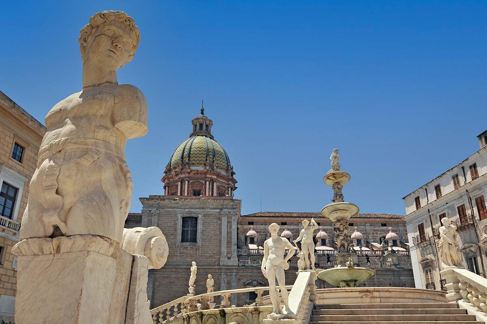

Piazza Pretoria a Palermo

La sua storia
La storia di Piazza Pretoria è una cronaca di potere, ostentazione e trasformazione urbana radicale. Nel 1573, il Senato palermitano decise di acquistare una gigantesca fontana marmorea, opera di Francesco Camilliani, originariamente commissionata per il giardino di una villa fiorentina. L'arrivo delle 644 casse contenenti i pezzi della fontana impose una completa ristrutturazione dell'area: per far posto alla struttura circolare, vennero demolite numerose abitazioni private, creando un vuoto monumentale in un tessuto urbano fino ad allora densissimo e medievale. Questa operazione non fu solo estetica ma profondamente politica: posizionando la fontana esattamente di fronte al Palazzo Pretorio, la municipalità voleva affermare la propria magnificenza nei confronti del vicino potere religioso della Cattedrale e del potere vicereale. Il soprannome "Piazza della Vergogna" affonda le radici nel XVIII secolo, quando le monache di clausura dei conventi circostanti, urtate dalla nudità delle divinità pagane scolpite nel marmo, avrebbero vandalizzato le statue staccando loro i nasi, in un gesto di ribellione contro l'indecenza di quella "foresta di marmo" imposta nel cuore della città.

Elemento d'arredo
Fontana Pretoria (detta "della Vergogna")
Dimensione
1.500 mq